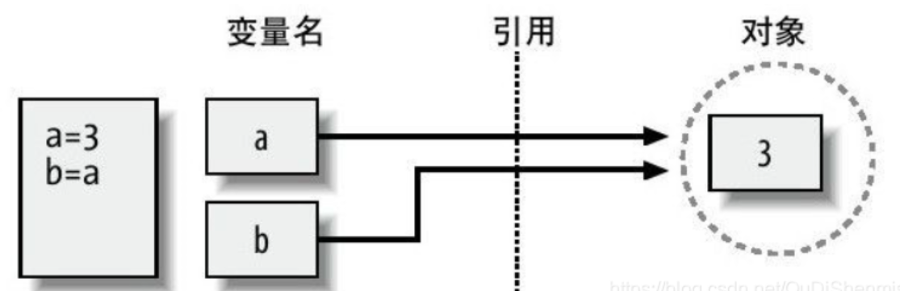
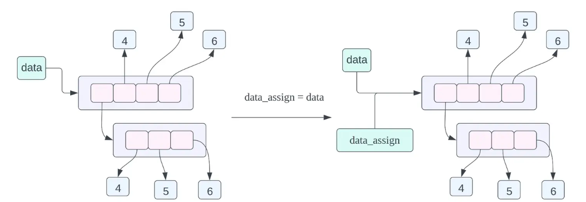
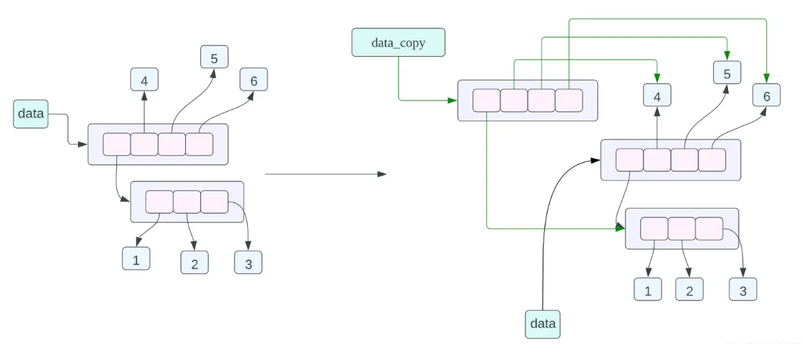
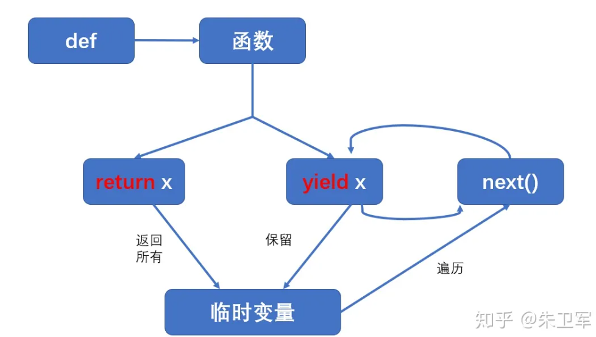
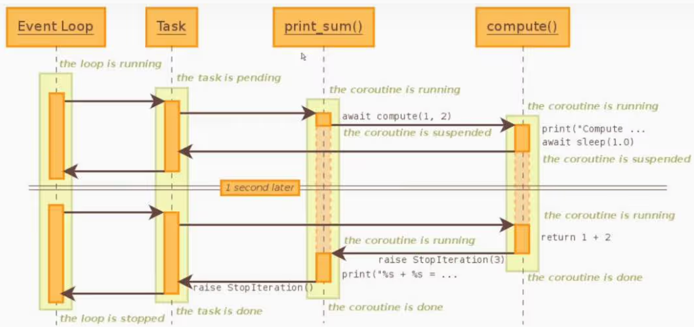

0. Environment
- OS: linux Ubuntu 20.04 (docker container)
- IDE: VSCode remote
0.1 Python语法检查器设置
安装Pylint:
1 | pip install pylint |
生成配置文件：在自己的项目文件夹的根目录下面，生成.pylintrc
1 | cd /path/to/your/project |
**最重要且最有效的：**在.vscode中设置setting.json （添加）
1 | { |
设置这个就行了。
0.2 VSCode Theme
深色主题-深色+
0.3 conda env
- 导出现在的conda环境，保存为
requirements.txt
1 | conda list --export > requirements.txt |
- 创建新环境
1 | conda create --name your_new_env_name |
- 激活并安装
1 | conda activate your_new_env_name |
- conda查看源：
1 | conda config --show channels |
- conda添加源：
1 | conda config --add channels https://mirrors.tuna.tsinghua.edu.cn/anaconda/pkgs/free/ |
0.4 制作Python包
当你使用 pip install -e . 命令来从源代码构建 Python 包时，这个命令执行了以下几个关键步骤：
- 定位
setup.py或pyproject.toml文件：这个命令首先会在当前目录（即你使用cd命令进入的目录）查找setup.py或pyproject.toml文件。这些文件包含了关于如何安装和构建你的包的信息。 - 解析依赖关系：
setup.py或pyproject.toml文件中会列出这个包的依赖项。pip会首先解析这些依赖关系，并且在必要时从 PyPI 或其他指定的源下载并安装它们。 - 安装方式：使用
-e参数（代表“editable”模式）安装包意味着 Python 会直接从源代码目录运行这个包，而不是将其复制到 Python 的 site-packages 目录。这样做的好处是你可以修改源代码并立即看到效果，无需重新安装。 - 链接到 site-packages：虽然包的代码仍然位于原来的目录，但
pip会在 Python 的 site-packages 目录中创建一个指向源代码目录的链接。这意味着当你在 Python 中导入这个包时，它实际上是导入的源代码目录中的代码。 - 运行任何必要的构建步骤：如果这个包需要编译扩展模块或执行其他构建步骤，这些步骤将在这个阶段执行。
0.5 pip设置镜像源
1 | pip config set global.index-url https://pypi.tuna.tsinghua.edu.cn/simple |
1. Python内存管理
如今重返Python，我很好奇的第一个问题就是：Python是如何进行内存管理的？
两个点：
- Python的赋值其实都是在赋值引用
- Python内部带有垃圾回收机制
1.1 赋值其实是在变动指针
1 | a = 3 |

对于这两句，在内存上会经历这样一个过程：
- 分配一块内存空间，这块内存空间的值为3
- 名为a的变量指向这块内存空间
- 名为b的变量指向 变量a指向的内存空间
这就是最基本的赋值。Python的赋值，其实是在变动指针
1.2 拷贝
1. 普通赋值
1 | data = [[1, 2, 3], 4, 5, 6] |

这个时候，data_assign仅仅只是指向了 **data变量所指向的地址 ** 而已。
1 | a = [1, 2, 3, 4, 5] |
2. 浅拷贝
1 | data_copy = data.copy() |

对于第一层数据，也就是最外层的[x, 4, 5, 6] 会被拷贝一份新的，也就是在内存上会出现一份新的列表。
但是里层的列表并不会被拷贝，也就是说：两个拷贝出来的一级list的第一个元素，会指向同一块list地址 而这些list中的每一个元素，会指向一块数据。
这个方法的含义对于列表来说和列表本身的 x.copy() 方法的意义是一样的，都是进行浅拷贝。这个方法会构造一个新的 python 对象并且会将对象 x 当中所有的数据引用（指针）拷贝一份。
2. 深拷贝
这个方法主要是对对象 x 进行深拷贝，这里的深拷贝的含义是会构造一个新的对象，会递归的查看对象 x 当中的每一个对象，如果递归查看的对象是一个不可变对象将不会进行拷贝，如果查看到的对象是可变对象的话，将重新开辟一块内存空间，将原来的在对象 x 当中的数据拷贝的新的内存当中。
1.3 对象的可变性
在 python 当中主要有两大类对象，可变对象和不可变对象，所谓可变对象就是对象的内容可以发生改变，不可变对象就是对象的内容不能够发生改变。
- 可变对象：比如说列表(list)，字典(dict)，集合(set)，字节数组(bytearray)，类的实例对象。
- 不可变对象：整型(int)，浮点型(float)，复数(complex)，字符串，元祖(tuple)，不可变集合(frozenset)，字节(bytes)。
什么叫不可变对象呢？
1 | a = 10 |
其实在这个过程中，首先开辟了一块内存空间，放置10，然后再开辟了一块内存空间，放置100。
在这个过程中，a仅仅是一个指针而已。所以说，并没有改变数字10所在的那块内存空间的值，而是新开辟了一块空间并且让a指向。
列表、字典、集合等对象可以被改变，就是因为列表的重新分配地址有时候比较消耗内存，编译器不会用这样耗时的方法。
总结：
这个可变性，要加上前缀，全称应该是：变量所指向内存空间的值的可变性
普通变量，所指向的内存空间的值不可更改，如果遇到要改变赋值的情况，那么会再开辟新的空间，而不会改动老空间的值，这种就叫不可变。
列表、元组等，所指向的内存空间的值可改变。如果遇到要改变赋值的情况，会直接在原空间上对数据进行更改。
2. Functional programming
2.1 传参时的内存管理方案
按照传统的理解，当python传递参数的时候，难不成会把整个变量都拷贝一份再赋值进来？
1 | def func(net): |
在有了上面的概念之后，一切都很清晰明了了：
即使是传递的参数，实际上也是传递的一个指针而已。 比如这个net，只是把那个指向内存实际net位置的指针 传入到了函数中，实际上在传参的时候，并不会带来多大的开销。
那么传参的时候，是按值传还是按引用传？
实际上，如果传入的参数是一个可变对象 则会传递它的引用，比如：list、tuple
如果传入的参数是一个 不可变对象 则会传递它的值，也可以理解为一个拷贝。这个时候在函数中改变该变量的值，也并不会影响到函数外的变量。
2.2 函数式编程
python中的函数也可以作为一个值被赋给其他变量。
在传递参数的时候，如果直接传递了这个函数的名字（不带任何括号、参数）表示把这个函数作为 参数值 传递进去
如果传递了这个函数（带括号表示先运行这个函数），会把这个函数的返回值作为参数传递。
2.3 yield
-
有
return的函数直接返回所有结果，程序终止不再运行，并销毁局部变量； -
有
yield的函数则返回一个可迭代的 generator（生成器）对象，- 你可以使用for循环 或者 调用
next()方法 遍历生成器对象 来提取结果。
- 你可以使用for循环 或者 调用

这个是什么意思呢：意思就是函数并不会立即返回。他只是把某个值放入到返回值list当中去，然后接着往下执行。比如：
1 | def simple_generator(): |
需要注意的是，定义了这样一段代码，并且使用了my_generator 进行赋值，实际上my_generator也只是一个生成器而已，这个函数还没有被执行
当使用for循环遍历这个生成器的时候，才会依次执行这个函数的代码，生成特定的结果，并且返回给for循环里面使用。
当且仅当这个迭代器被遍历的时候，才会执行那个函数中的内容，在此之前，迭代器里面并没有任何数据。
yield也仅仅只是记录函数之前运行的位置（下一次从哪里执行）
2.4 *args, **kwargs
*args就是就是传递一个可变参数列表给函数实参，这个参数列表的数目未知，甚至长度可以为0。
**kwargs则是将一个可变的关键字参数的字典传给函数实参，同样参数列表长度可以为0或为其他值。
我觉得在这里的意思是：把传入的参数，凝聚为list，或者字典
案例：
1 | def test_kwargs(first, *args, **kwargs): |
字典类pop(): 删除字典给定键 key 所对应的值，返回值为被删除的值。
其中第一个参数是需要被寻找的键值，第二个参数是，如果没有找到这个对应的value，返回的value值。
3. Pythonic Object
3.1 type
经常在函数的形参中看到变量类型声明。
1 | from typing import Dict, List, Optional, Union |
他们的使用方法有点奇怪，他们的[]运算符中放置的是类型。
1 | def append_token_id( |
在上述例子中，声明了logprobs这个字典类（或者哈希表）的key类型是int，value类型是float。也声明了token_ids这个列表中放置的全部都是int类型的变量。
返回值是None，也就是什么都不返回。
Optional
Optional表示可选参数，一般来说使用了Optional[]表明了参数类型之后，后面都需要跟一个默认参数。
Callable
如果这个变量是一个函数，那么它的类型被标注为Callable[]
有时候报错：TypeError: 'type' object is not subscriptable 这个的意思是：对不具有下标操作的对象加上了索引。
比如：
1 | a: list[str] = ['test'] |
这就不行，如果要进行类型声明，应该是：
1 | from typing import List |
不要使用原生的类型声明。
3.2 self
类方法必须包含一个参数self，且作为第一个参数。self代表的是 类的实例
3.3 methods
3.3.1 private method
在Python类中，将类方法命名为：
1 | class A: |
方法名前面加上前缀__ 即可将该方法声明为私有成员方法，外部不可调用。
3.3.2 __hash__ & __eq__
可哈希的集合（hashed collections），需要集合的元素实现了__eq__和__hash__，而这两个方法可以作一个形象的比喻：
哈希集合就是很多个桶，但每个桶里面只能放一个球。
__hash__函数的作用就是找到桶的位置，到底是几号桶。
__eq__函数的作用就是当桶里面已经有一个球了，但又来了一个球，它声称它也应该装进这个桶里面（__hash__函数给它说了桶的位置），双方僵持不下，那就得用__eq__函数来判断这两个球是不是相等的（equal），如果是判断是相等的，那么后来那个球就不应该放进桶里，哈希集合维持现状。
3.3.3 __repr__
定义要打印什么东西。
3.3.4 __aiter__ & __anext__
它返回一个异步可迭代对象的异步迭代器。
(in many cases it’s simply a reference to itself: return self)
anext: returns the next element—could be obtained from an asynchronous source such as an asynchronous database. But doesn’t have to be!
1 | class AsyncStream: |
3.4 装饰器decorators
3.4.1 @property
我们可以使用@property装饰器来创建只读属性，@property装饰器会将方法转换为相同名称的只读属性,可以与所定义的属性配合使用，这样可以防止属性被修改。
注意：被定义的内容，包括这个func本身，都仅仅只是一个属性而已
1 | class DataSet(object): |
3.5.4 @classmethod
表示这个类中的成员方法
1 | class DataSet(object): |
3.5 cls
python中cls代表的是类的本身，相对应的self则是类的一个实例对象。
因为cls等同于类本身，类方法中可以通过使用cls来实例化一个对象。
1 | class Person(object): |
3.6 菱形继承
1 | class A: |
这个时候，如果初始化M，会打印"C"
在B的super中，本质是：
1 | class B(A): |
而这个self是根据当前的self决定的。在M中，mro的顺序是：M, B, C, A, object
所以super在找到B之后，在往上面寻找，就找到了C，所以调用的是C的say()。
4. Async syntax
4.1 asyncio

asyncio starts from Python 3.4. 这个框架使用事件循环来编排回调和异步任务。

4.1.1 事件、事件循环
asyncio的主要组件包括：
- event loop - 异步模型允许每个进程有一个事件循环。
- coroutines - 协程。协程可以在执行期间挂起，以等待外部处理、I/O中的某个例程，并从外部处理完成时返回到停止点
- futures - 定义future对象。例如concurrent.futures模块，代表尚未完成的计算
- tasks - 这是asyncio的一个子类，用于以封装和管理协程
Event - 事件
- 在
asyncio中，事件通常是指需要异步处理的操作，如网络请求、读写文件等。 - 事件也可以是用户自定义的，用于在协程之间进行信号传递和状态通知。
asyncio.Event是一个同步原语，类似于线程编程中的事件。它是一个状态标记，可以被设置（set）或清除（clear）。协程可以等待一个事件被设置，这使得协程之间可以协调其行为。asyncio.Event可以用于不同协程之间的同步和通信，例如，一个协程在某个条件满足时设置事件，其他协程等待这个事件来进行下一步操作。
Event Loop - 事件循环
- 事件循环是
asyncio中的核心组件，负责管理和调度协程的执行。 - 它循环等待并分发事件，如 I/O 操作、定时器或其他异步操作的完成。
- 事件循环负责维护程序的运行，直到所有任务都完成或被取消。
- 它使得单线程中的异步协程能够高效地执行，通过在协程之间切换来响应不同的事件。
- 我们在刚才讲到：一个协程被await的时候，控制权会交给事件循环，事件循环会切换到另一个协程继续执行。
coroutine
asyncio维护的是协程：asyncio库主要维护的是协程（coroutines），而非线程。协程是一种轻量级的线程，它们在单个线程内并发执行。与线程相比，协程的开销更小，因为它们共享同一线程的资源，而不需要线程之间的上下文切换。在asyncio中，协程提供了一种有效的方式来实现并发编程。
协程（Coroutines）：在Python中，协程是通过async定义的特殊函数，它们通过await关键字来挂起和恢复执行。这允许程序在等待异步操作完成时执行其他任务。
4.1.2 API libs
Asyncio提供用于管理事件循环的方法如下：
loop = get_event*_*loop()方法 - 获取当前上下文的事件循环
| Function usage | Explanation |
|---|---|
loop.call_soon(callback, argument) |
当控制返回到事件循环时调用 |
loop.call_later(time_delay, callback, argument) |
在给定的时间延迟秒之后调用回调函数 |
loop.time() |
根据事件循环的内部时钟将当前时间返回 |
loop.run_until_complete(func()) |
永远运行直到执行完成 |
asyncio.set_event_loop() |
设置当前上下文的事件循环为循环 |
asyncio.new_event_loop() |
根据策略的规则创建并返回一个新的事件循环对象 |
这个上下文可以理解为操作系统中所写的tcb上下文context。
run_until_complete 来运行 loop ，等到 future 完成，run_until_complete 也就返回了。
run_forever 会一直运行，直到 stop 被调用（在python3.7中已经取消了）
所以现在建议使用loop.run_until_complete。
需要注意的是，在run_until_complete()函数中传入的是另一个函数的使用，而不是函数指针本身。并且这个被传入的函数必须被定义为async
GPT generated
loop.run_until_complete() 是 asyncio 库中的一个重要函数，它用于运行事件循环，直到指定的 Future 或协程运行完成。下面是这个函数的具体作用和用法：
- 作用：
loop.run_until_complete()用于启动 asyncio 事件循环，并运行传入的协程或 Future 对象。事件循环会持续运行，直到给定的协程执行完毕。一旦协程执行完毕，事件循环停止，函数返回协程的结果。 - 使用场景：
- 当你有一个协程（通过
async def定义的函数）并且你想运行它时，你可以将这个协程传递给run_until_complete()函数。 - 它通常用于脚本或程序的主入口点，在那里启动并运行顶层的协程，然后在协程完成时退出。
- 当你有一个协程（通过
4.1.3 Get Started
1 | # Starting asyncio event loop to process the received requests asynchronously. |
这是NV仓库中，管理vllm engine的思路：
- 首先确定了一个事件循环。（
get_event_loop()） - 然后创建一个单独的线程，来管理所有的engine协程（请求处理）
- 使用了一个线程函数：
engine_loop，并且把self._loop传给了这个函数。- 这一步的意思就是说，把这个协程的事件循环，设置为该线程的事件循环。
- 然后创建了一个Event，这个Event就是整个系统shutdown的事件。
- 它会在finialize的时候，通过
self._shutdown_event.set()来把这个事件进行设置。同时，也通过while self._shutdown_event.is_set() is False:来判断这个事件是否进行了设置。 self.await_shutdown()函数，就是一直等待系统shutdown。- 所以相当于说，这个事件循环的第一件事，就是在等待系统shutdown。
- 它会在finialize的时候，通过
- 启动线程
4.2 tasks launching
4.2.1 多tasks并发
-
使用
asyncio.gather()：asyncio.gather()是一种高级的协程调度方法，它可以同时运行多个协程，并收集它们的结果。- 当你使用
gather()时，它会等待所有传入的协程完成，并返回一个包含所有协程返回值的列表。
示例代码：
1
2
3
4
5
6
7
8
9
10
11
12import asyncio
async def task(num):
await asyncio.sleep(1)
return f"任务{num}完成"
async def main():
tasks = [task(i) for i in range(5)] # 创建多个协程任务
results = await asyncio.gather(*tasks)
print(results)
asyncio.run(main())在这个例子中，
main()协程通过asyncio.gather()同时运行五个task协程，并等待它们全部完成。 -
Task：
- 在 asyncio 中，“task” 是对协程的一种封装，它用于调度协程的执行。一个 task 代表一个可以在事件循环中调度的协程。
- Task 对象使得你可以监视协程的状态（比如运行中、完成或取消）并获取其结果。
-
Event：
- 通常，“event”（事件）在编程中指代特定的动作或发生的事情，比如用户的点击操作、网络请求的响应等。
- 在
asyncio中，没有直接称为 “event”的概念，但有类似 “Event loop”（事件循环）这样的术语，它指的是循环监控并执行任务的机制。
我觉得Python这样的协程设计，还是得益于它的函数式编程概念。async function可以直接作为值进入列表。
个人认为以后可以通过asyncio.wait()或者asyncio.gather()来管理所有协程。
任务？事件？我该用哪个来管理我的执行内容？
- 使用
asyncio.run()还是loop.run_until_complete()取决于你的代码环境和 asyncio 版本。如果你使用的是 Python 3.7 或更高版本，并且不需要与旧的异步代码交互，推荐使用asyncio.run()。因为旧版本代码管理协程需要使用事件循环。 - 任务和事件的概念在 asyncio 中有所不同。在 asyncio 中，你主要与任务（封装的协程）和事件循环打交道，而不是直接处理事件。任务是在事件循环中被调度和执行的实体。
4.2.2 launching方法
task总要运行，并且这些协程函数总是需要在一个非协程的环境中来调用。
如果朴素的使用asyncio.run()来执行，确实可行，不过无法在大型工程中保证安全。
正确地做法应该是：
- 得到事件循环
- 利用、通过事件循环来完成工作。
- 这里有一个关键的概念就是：进行异步操作的对象永远都不应该是asyncio，而是获取到的事件循环：loop
- 比如说，我可以调用
loop.run()，或者loop.run_until_complete()
如果我不想等待任务完成，也就是我不想阻塞在这里，我想立即开始后面的任务，我应该怎么办呢？
答案就是使用asyncio或者_event_loop .create_task() 来完成，这样会创建任务然后执行，代码不会停在这里。
如果是一个多线程程序，主线程想要在副线程中执行协程，应该这样做：
-
首先给副线程绑定一个事件循环，这个事件循环由主线程控制。
-
然后在主线程中，通过这个事件循环下达指令：
1
2
3
4
5
6
7
8
9def create_task(self, coro):
"""
Creates a task on the engine's event loop which is running on a separate thread.
"""
assert (
self._shutdown_event.is_set() is False
), "Cannot create tasks after shutdown has been requested"
return asyncio.run_coroutine_threadsafe(coro, self._loop)
4.3 atomic
在 Python 的 asyncio 中，处理多个协程访问和修改同一变量时的并发问题是很重要的。由于 Python 协程是协作式的，并非真正的并行执行，所以它们不会像多线程程序那样遇到传统的并发问题（比如竞态条件）。但是，当协程被设计为可以在任何时刻被暂停和恢复时，确保数据一致性和原子性操作就变得重要了。
-
协程和原子性：
- 在 asyncio 协程中，只要没有遇到
await表达式，协程就不会自动让出控制权。这意味着在遇到await之前的代码部分是原子性的，即不会在执行过程中被其他协程打断。 - 一旦执行到
await表达式，事件循环可以切换到其他协程，因为await代表在这个地方悬挂，事件循环当然可以切换到其他协程。因此在await之后的代码不能保证原子性。
- 在 asyncio 协程中，只要没有遇到
-
锁（Locks）：
- Python 的 asyncio 提供了特殊的锁（例如
asyncio.Lock），这些锁可以在协程中使用，用来保护共享资源。 - 这些锁与传统的线程锁不同，它们是为异步操作设计的。当协程尝试获得一个已被占用的锁时，它会自动暂停（而不是阻塞），允许其他协程运行。
- Python 的 asyncio 提供了特殊的锁（例如
-
使用 asyncio 锁的例子：
1
2
3
4
5
6
7
8
9
10
11
12
13
14
15import asyncio
async def increment(shared_data, lock):
async with lock:
# 这个代码块在同一时刻只能被一个协程进入
shared_data["value"] += 1
async def main():
shared_data = {"value": 0}
lock = asyncio.Lock()
tasks = [increment(shared_data, lock) for _ in range(10)]
await asyncio.gather(*tasks)
print(shared_data["value"])
asyncio.run(main())在这个例子中，多个协程尝试修改同一个共享变量。通过使用
asyncio.Lock，我们确保了每次修改操作的原子性。
4.3.1 File IO
使用锁 (Locks)：
-
如果你需要同时运行多个协程但想保证文件写入的顺序，可以使用 asyncio 的
Lock。 -
Lock 可以确保一次只有一个协程可以执行特定的代码段。
-
示例代码：
1
2
3
4
5
6
7
8
9
10
11
12
13
14
15import asyncio
async def write_to_file(lock, file, content):
async with lock:
# 只有获取了锁的协程才能执行以下操作
file.write(content + "\n")
await file.flush() # 确保写入
async def main():
lock = asyncio.Lock()
with open('your_file.txt', 'a') as file:
tasks = [write_to_file(lock, file, f"内容{i}") for i in range(5)]
await asyncio.gather(*tasks)
asyncio.run(main()) -
这种方法允许协程并发运行，但通过锁来控制对文件的访问，以保证写入操作的顺序性。
4.3.2 lock
asyncio.Lock()返回一个可变对象，也就是说在函数传参的时候会传递它的引用，不用担心传递的是值拷贝。
在函数定义与使用的时候：
1 | async def func(source1, lock): |
使用锁的必要性：
在 Python 中，asyncio 协程是在单个线程内异步执行的，这意味着同一时间只有一个协程在实际执行。但即便如此，asyncio.Lock()（协程锁）仍然是非常有用的，原因有几个方面：
- 防止并发访问共享资源： 尽管在任何给定时刻只有一个协程在执行，但多个协程可能需要访问相同的资源（比如全局变量、文件、数据库连接等）。
asyncio.Lock()可以确保在某个协程访问共享资源时，其他协程不会同时访问，从而避免数据竞争和状态不一致的问题。 - 协程切换： 协程虽然是在单线程中运行，但它们之间会发生切换。当一个协程等待（例如，I/O 操作、
await其他异步操作）时，控制权会交给事件循环，事件循环会切换到另一个协程继续执行。因此，如果不同的协程需要按照特定顺序访问某个资源，协程锁就显得很有必要了。 - 保持状态的一致性： 在异步编程中，即使是简单的操作（比如增加一个计数器）也可能不是原子的。如果一个协程在更新某个共享状态时被挂起，另一个协程可能在不一致的状态下开始执行。使用锁可以保证操作的原子性和状态的一致性。
- 协调协程： 有时候，需要对协程进行协调，例如确保某些操作按顺序执行。锁可以用来协调不同协程的执行顺序，保证逻辑的正确性。
总结来说，尽管协程是单线程执行，但由于协程之间的切换和并发访问共享资源的需求，asyncio.Lock() 在维护数据完整性和协调协程行为方面仍然非常重要。
4.4 await
4.4.1 使用await会发生什么
看到await，就是看到了yield from.
当Python执行到一个await语句时，会发生几件事情，但它并不会导致整个程序阻塞，而是只会暂停当前的异步函数。这里是一个概述：
- 挂起当前协程（Coroutine）： 当执行到
await关键字时，Python会暂停该协程的执行。这意味着当前协程会在等待异步操作完成的过程中暂停执行，但它并不会阻止其他协程或主程序的执行。 - 上下文切换： 执行挂起后，控制权被交还给事件循环（Event Loop）。事件循环会检查是否有其他协程或任务可以执行，如果有，它会切换到那些协程或任务。
- 异步IO或任务执行： 与
await关键字一起使用的表达式（如异步IO操作或其他异步函数）会在后台执行。这些操作通常与IO（如网络请求、文件读写等）相关，它们会在操作完成时通知事件循环。 - 协程恢复执行： 一旦
await后的异步操作完成，事件循环会再次安排挂起的协程恢复执行。从await处继续执行，拿到异步操作的结果。
4.4.2 不使用await会发生什么
这个问题的关键就在于，如果我调用了一个async func但是不使用await，会发生什么？
如果您调用一个 async 函数但不使用 await 关键字，会发生以下几件事情：
- 返回协程对象：调用
async函数会返回一个协程对象，但不会执行该协程内的代码。协程对象本身不会做任何事情，直到它被await、加入到事件循环或转化为一个Task。 - 未执行协程：由于协程没有被
await，它内部的代码不会执行。这意味着任何在该协程内部定义的异步操作都不会开始执行。 - 可能的警告或错误：在某些情况下，Python 解释器可能会警告未等待的协程。这是因为一个未被使用的协程通常是程序中的一个错误。
- 无法获取结果：由于协程未执行，您无法获取到其中异步操作的结果。
省流：如果调用了一个async函数，而不使用await，那么仅仅只会得到一个协程对象，而不会执行协程内的代码。
所以如果要执行这个协程代码，就要使用await。
首先要明确的一个概念是：async def func返回的就会是一个协程对象 ，而不是一个具体的可运行的代码段。
4.4.3 async设计与使用
1 | async def abort(self, request_id: str) -> None: |
允许开发者在提供给外部的接口中使用异步编程，以便更好地管理 I/O 等待和协同工作，同时在内部实现中使用更简单的同步代码。
这种设计给出了一个范式：async函数内可以调用sync函数，而sync函数中只能调用sync函数。
第一行返回值也说明了：本身就返回None，那个返回值仅仅是调用另一个函数用的，而另一个函数没有返回值。
4.5 async for
async for 是 Python 异步编程中的一个关键概念，它是用于异步迭代的语法。异步迭代允许你以非阻塞的方式迭代一个异步迭代器（async iterator）。
4.5.1 异步迭代器和异步可迭代对象
在深入了解 async for 的原理之前，需要先理解异步迭代器（async iterator）和异步可迭代对象（async iterable）的概念：
- 异步迭代器（Async Iterator）：这是一个定义了
__anext__()方法的对象。__anext__()方法必须返回一个 awaitable 对象，当 awaitable 对象完成时，它要么返回下一个值，要么引发StopAsyncIteration异常来停止迭代。 - 异步可迭代对象（Async Iterable）：这是一个定义了
__aiter__()方法的对象。__aiter__()方法必须返回一个异步迭代器。
4.5.2 工作原理
当你在代码中使用 async for 时，Python 会执行以下步骤：
- 获取异步迭代器：首先，
async for会调用异步可迭代对象的__aiter__()方法来获取一个异步迭代器。 - 迭代过程：然后，Python 会反复调用这个异步迭代器的
__anext__()方法，并在每次调用时使用await等待结果。这个等待过程是非阻塞的，允许其他协程（coroutine）在等待时执行。 - 处理返回值：每当
__anext__()方法完成并返回一个值时，该值会被传递给async for循环，供你在循环体中使用。 - 终止迭代：当
__anext__()引发StopAsyncIteration异常时，async for循环结束。
4.5.3 实战案例
1 | async for output in self.llm_engine.generate( |
然后在AsyncLLMEngine中的generate()函数：
1 | try: |
在这里也需要注意，这里的yield和之前的不一样。之前的yield会生成普通的生成器，在这里会生成异步生成器
Python 提供了异步生成器，这是异步编程中的一个概念，它允许你在异步函数中使用 yield。异步生成器函数使用 async def 语句定义，并且使用 yield 产生值。这种类型的生成器可以在 async for 循环中使用。
4.6 asyncio.Queue
1 | self._new_requests: asyncio.Queue[Tuple[AsyncStream, dict]] = asyncio.Queue() |
asyncio.Queue是可变对象，在函数传参的时候会直接传递引用，所以不用担心拷贝问题。
功能与场景：
- 协程间通信：
asyncio.Queue允许在不同的协程之间传递数据。这在需要在协程之间共享或传递信息时非常有用。 - 任务调度：你可以使用它来实现生产者-消费者模式，其中一个或多个协程生成数据并将其放入队列，而另一个或多个协程从队列中取出数据并处理。
- 异步处理：由于
asyncio.Queue支持异步操作，它可以用于在异步应用中进行任务调度和管理，而不会阻塞事件循环。
基本方法：
put(item)：异步地将一个项目放入队列中。如果队列已满，则等待直到有空间可用。get()：异步地从队列中获取一个项目。如果队列为空，则等待直到有项目可用。task_done()：用于告知队列某个之前从队列中取出的项目已经处理完毕。join()：等待直到队列中的所有项目都被处理完毕。
基本案例：
1 | import asyncio |
4.6.1 wait or not: put_nowait()
put与get方法是两个阻塞方法：put不到值(超出队列大小)，程序夯住，get不到程序也夯住。
put_nowait与get_nowait方法是两个非阻塞方法：put_nowait没有值的话不等，get_nowait取不到值也不等了，程序不会夯住，但是一定要做异常处理！
为什么要做这样的设计呢，这就是提升经验的地方。
这是一种管道设计。两个协程在互相操作，一个协程相当于是生产者，另一个是消费者。
两个协程之间要进行通信，那么就需要这样一个管道来处理。 async_engine:439
具体来说是这样的：
1 | async def greedy_abort(self, request_id: str): |
在这里，在request_tracker中把请求abort了。那个self._migrate_out就是一个asyncio.Queue()
在这里就是放入数据。
request_tracker中还定义了另一个函数，也就是消费者：
1 | def get_migrate_out_requests(self) -> Tuple[Set[str], List[AsyncStream]]: |
在这里就是把数据拿出来。
操作（调用）这个函数的是：
1 | async def run_engine_loop(self): |
在这里进行操作。
5. String
5.1 str syntax
5.2 encode && decode
str.encode("utf-8") -> bytes编码字符串。 获得字节对象。
bytes字符串在网络编程时比较有用，因为基本上都是以字节流的方式在进行数据传输的。
例子：
1 | str1 = "我爱祖国" |
1 | utf8编码： b'\xe6\x88\x91\xe7\x88\xb1\xe7\xa5\x96\xe5\x9b\xbd' |
同样，在以utf-8的编码格式解码回去，可以得到计算机处理的字符串。
5.3 split & join
现在有这样一个需求：我有一个output路径：output/result.txt，我想根据我的请求id将不同的output放在不同的文件里面，比如第一个请求的结果就应该在：output/result_0.txt里面。
要完成这个动作，以下代码即可达成目的：
1 | file_path = self._flags.results_file |
Appendix: Python syntax tricks
1. 类型判断与比较
使用type()直接查看每一个变量的数据类型。不过type()仅仅返回当前的变量的类型。
如果使用type(a) == int 没什么问题，但是在比较复杂对象的时候（比如考虑继承关系的时候），就无法进行比较了。
这个时候就需要使用isinstance()封装函数来进行比较类型了。
isinstance(A, B) 如果这个A继承了B，那么这两个仍然会被认为是同一个类，返回true。
2. 反射
1 | class WebSite: |
hasattr()函数就是用来查找一个对象中是否有这个方法、变量。
要访问某个变量或是方法时并不知道到底有没有这个变量或方法，所以就要做些判断。判断是否存在字符串对应的变量及方法。
- 同理，如果我们要取到这个方法，就要使用
getattr()，就像上面的例子中展示的一样。 - 同理，还有
setattr(parent: nn.Module, name: str, module: nn.Module):
3. ‘r’ or ‘b’ before string
r"string"
在字符串前面不加r，表示会读取字符串中的转义字符，比如\n ，如果加r 就会忽略。
1 | print("hello\nworld") |
1 | hello |
b"string"
在字符串前面加b代表bytes，网络编程中，服务器和浏览器只认bytes 类型数据。send 函数的参数和 recv 函数的返回值都是 bytes 类型
4. iterable things
all()
all() 函数用于判断给定的可迭代参数 iterable 中的所有元素是否都为 TRUE，如果是返回 True，否则返回 False
1 | # syntax |
ord()函数用于查看每个字符的ASIIC码。
同样，还有any()函数
any()
any()函数用于判定iterable things中所有元素只要有任何一个为True，则返回true。
除了上面封装的函数之外，还有一些制造list或者Dict时候的trick:
1 | {k: labels[k] for k in image_names if k in labels.keys()} |
这就是一句话构造一个新的字典类，构造list同理。
这句话的执行优先级应该是：
- for k in image_names
- if k in labels.keys()
- k: labels[k]
把遍历 + 判断逻辑玩到极致
1 | [t.replace('.', '').lower() if '.' in t else t.lower() for t in tokens] |
在这句话中，判断的优先级是：
- 先做for循环
- 然后判断if else
- 然后进行单个遍历对象的 操作工作
5. // or / or %
//是地板除：
1 | a = 5 // 3 # 1 |
/是常规除法，注意这里该得到什么就是什么
1 | a = 5 / 2 # 2.5 |
6. 多行字符串
在python中还可以创建多行的字符串，例如：
1 | test_str = r""" |
即便是打印出来，也会打印出原生的字符串。
Appendix: 经验之谈
Python中，当要做一个很大的项目的时候，更好的方式是把一个功能作为一份py文件，而不是一个模块。
我看到很多Py文件也是一千多行，他们都是在实现功能。而不是零零散散拆成很多个东西
Appendix: ray
1. remote 关键字
remote 关键字在 Ray 中用于创建分布式任务或者 Actors。它的用法有两种主要形式：
- 用于函数：当你在一个函数定义前加上
@ray.remote，这个函数变成了一个可以在 Ray 集群中异步执行的任务。每当你调用这个函数时（使用.remote()），它会在集群的一个节点上异步执行，而不会阻塞当前线程或进程。 - 用于类：将
@ray.remote应用于一个类定义，这个类就变成了一个 Actor 类。Actor 是一种可以在集群中维持状态的分布式对象。每次你实例化这个类（使用.remote()），它都会在集群的一个节点上创建一个 Actor 实例。
2. ray.get()
ray.get() 是一个函数，用于从异步执行的任务或 Actors 中检索结果。
当你调用一个经 remote 关键字处理的函数或 Actor 方法时，你会得到一个 Future（或者说是一个 ObjectRef），它是一个指向最终结果的引用。要获取这个异步任务的实际结果，你需要调用 ray.get()：
1 | result = ray.get(future) # 阻塞直到任务完成，并获取结果 |
ray.get() 是阻塞的，它会等待远程操作完成并返回结果。这使得你可以在需要时等待异步操作的结果，同时又能在不需要时让操作在后台异步执行。
Appendix: torch
tensor.unsqueeze(dim)
给指定位置加上维数为1的维度。
参数就是指定的位置（target_dim），函数的作用就是加上一个维度
1 | x = torch.rand(2, 3) |
1 | tensor([[0.1255, 0.7249, 0.5253], |
1 | y = x.unsqueeze(1) |
1 | tensor([[[0.1255, 0.7249, 0.5253]], |
1 | z = x.unsqeeze(2) |
1 | tensor([[[0.1255], |
在这里应该这么理解：不管添加的是在哪，末尾的两个永远是行和列。
比如说，第二个里面，就是1*3的矩阵，然后高为2.
第三个里面，就是3*1的矩阵，高为2
with torch.no_grad():
with torch.no_grad() 是 PyTorch 中的一个上下文管理器（context manager），用于在特定的代码块内暂时禁用梯度计算。这在 PyTorch 中非常有用，尤其是在进行模型推断（inference）时，因为它可以减少内存使用并提高计算效率。让我们具体了解一下它的作用：
- 减少内存使用：在训练神经网络时，PyTorch 会自动跟踪所有可训练参数的梯度，以便进行反向传播。这需要存储额外的信息，比如每个操作的梯度。当你不需要进行梯度更新（例如，在模型评估或推断时），使用
with torch.no_grad()可以告诉 PyTorch 不跟踪这些梯度计算，从而减少内存占用。 - 提高计算效率：由于梯度计算和存储是计算密集型操作，禁用它们可以减少计算负担，从而加快模型的推断速度。
- 避免不必要的计算：在某些情况下，您可能只想通过网络前向传播数据以获得输出，而不关心梯度（如在评估模型性能时）。在这些情况下，使用
with torch.no_grad()可以防止进行无用的计算。
实践出真知。
在纯推理任务中，没有加之前：14206MiB
加了之后： 2438MiB
基本上就只有模型本身的那一点权重了。
如果您喜欢此博客或发现它对您有用，则欢迎对此发表评论。 也欢迎您共享此博客，以便更多人可以参与。 如果博客中使用的图像侵犯了您的版权，请与作者联系以将其删除。 谢谢 ！